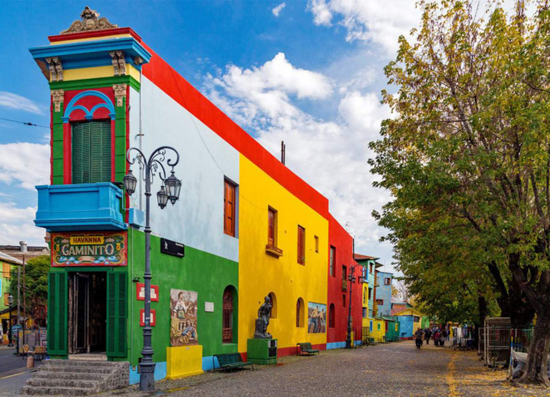
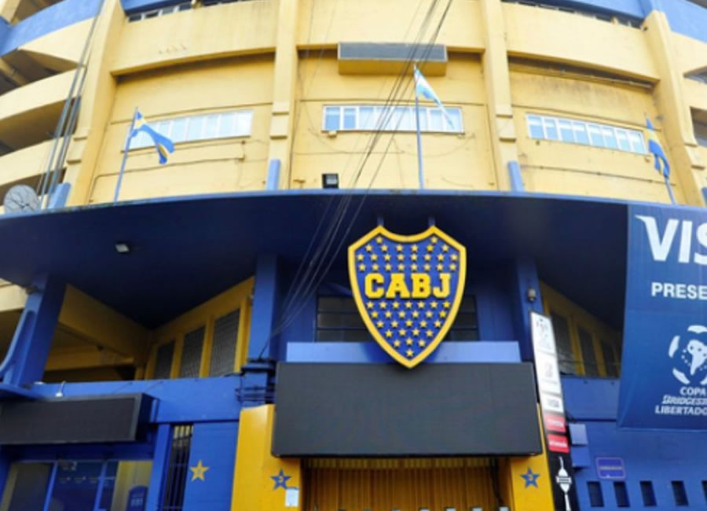
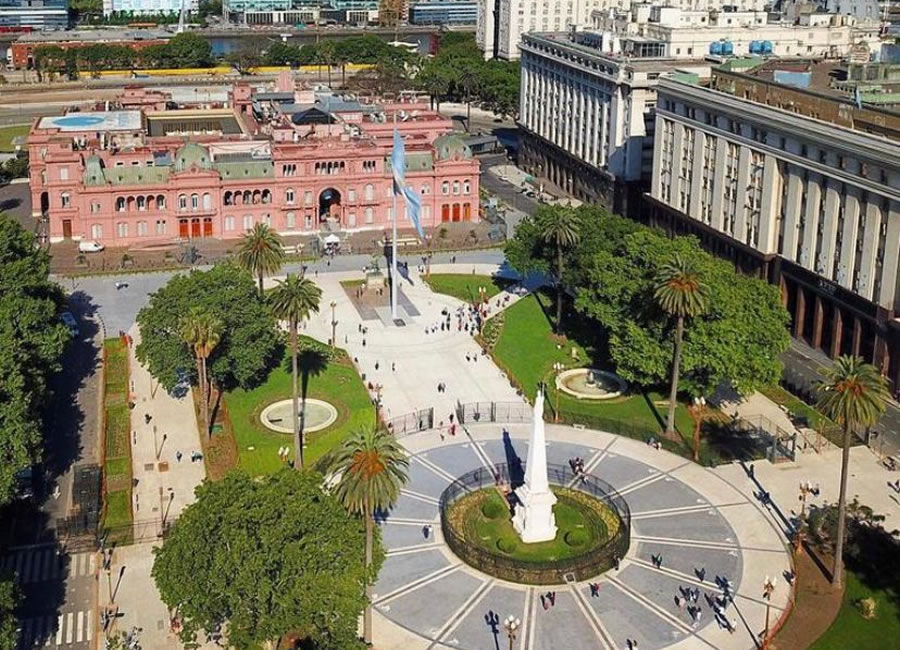
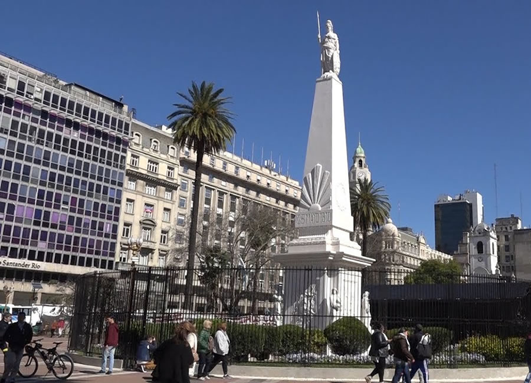
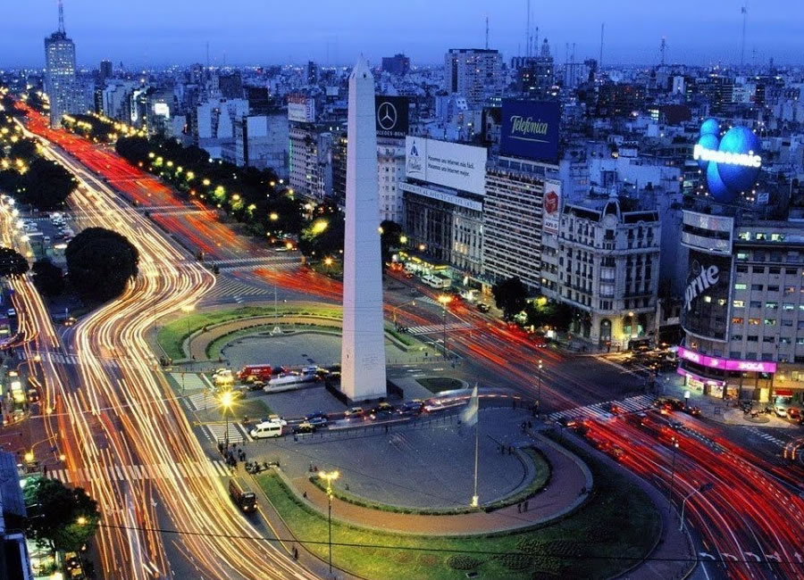

Turismo Buenos Aires
Caminito
It is a famous open-air museum with a length of approximately 130 meters, of great cultural value, in the District of La Boca, which was inhabited in the late 1800s by immigrants of Genoese origin. The street is distinguished by its colorful wooden tenement houses, rebuilt in the 1950s by a project by the painter Benito Quinquela Martin. It gave rise to the famous Caminito tango.
Recommended gastronomic places: Estacion Caminito, Gran Paraiso, conventillo rosa Parrilla
La Bombonera
The Boca Juniors Club was founded in 1905 and since 1923 it has been located on the current site, La Boca neighborhood. It began to function with wooden stands. In 1940 the Slovenian architect Víctor Sulcic made it in cement and today it bears the name of one of its former presidents "Alberto J. Armado"
Recommended gastronomic places: La Bombonera, Moscato Pizza & Faina , La Glorieta de Quique.
Plaza De Mayo
Founding site of the City of Buenos Aires by Juan de Garay in the year 1580 with the name of the Holy Trinity and Puerto de Santa María del Buen Ayre, also its name is a tribute to the May Revolution of 1810.
Recommended gastronomic places: Pertutti Suc. Plaza de Mayo , Bar Cabildo de Buenos Aires, La Junta de 1810
Pirámide de Mayo
It was the first monument that Buenos Aires had in commemoration of the First National Government, in the mid-19th century the pyramid was transformed, leaving the original one inside and placing the statue of the republic on it.
Recommended gastronomic places: Pertutti Suc. Plaza de Mayo , Bar Cabildo de Buenos Aires, La Junta de 1810
Cabildo de Buenos Aires

The function of the Cabildo was to be the seat of the colonial administration and it was the epicenter of the events that occurred in the week of May 1810. The original building was designed and built by Jesuit architects in the mid-18th century, undergoing major modifications during the 19th century.
Recommended gastronomic places: Pertutti Suc. Plaza de Mayo , Bar Cabildo de Buenos Aires, La Junta de 1810
Casa Rosada

It is a pink building where the Fort of Buenos Aires functioned in 1580, it was the residence of Spanish viceroys and later housed the authorities of successive national governments. It currently functions as the Presidential headquarters.
Recommended gastronomic places: Pertutti Suc. Plaza de Mayo , Bar Cabildo de Buenos Aires, La Junta de 1810
Catedral Metropolitana

Dedicated to the Holy Trinity. It is the main Catholic temple of Argentina located in the neighborhood of San Nicolás in front of the Plaza de Mayo. It dates from the year 1580. It was demolished several times and rebuilt for the last time in 1999. The mortal remains of General Don José San Martin lie there.
Recommended gastronomic places: Pertutti Suc. Plaza de Mayo , Bar Cabildo de Buenos Aires, La Junta de 1810
Café Tortoni

Historic French-style café opened in 1858, once frequented by the tango culture elite. It is located at Av. de Mayo 825. It receives its name in homage to a Parisian cafe located on the Boulevard de los Italianos. The original Tortoni in Buenos Aires opened its doors at the intersection of Avenida Rivadavia and Esmeralda.
Obelisco
It is a historical monument considered an icon of the City of Buenos Aires, located in the Plaza de la República in the San Nicolás neighborhood. It was built to celebrate the fourth centenary of the founding of the City. It has a height of 67.5 meters. Its shape is geometric, it dates back to 1936 and is the authorship of the Argentine architect Alberto Prebisch.
Recommended gastronomic places: Revire Brasas Bravas , Kentucky, Pizzería Guerrín
Teatro Colón

It is one of the most important theaters in the world of opera and is on a par with La Scala in Milan, the Royal Opera House in London and the Opera Garnier in Paris. It was founded on May 25, 1908 presenting the opera Aída by Giuseppe Verdi. Its construction lasted almost 20 years and involved more than 1500 people. It is the work of the architects Francesco Tamburini, Víctor Meano and Jules Dormal. It has a capacity for 2,500 spectators.
Recommended gastronomic places: El Cuartito, La Americana, Pizzería Banchero, Las Cuartetas,El Palacio de la Pizza
Congreso Nacional


It is located in the Monserrat neighborhood and is the seat of legislative power. It has more than 12,000 square meters that make it one of the largest in the world. The work was begun in 1896 by the architect Vittorio Meano and later completed by the architect Julio Dormal in 1946. We can also find the Palacio Barolo, designed by the architect Mario Palanti, a great scholar of the Divine Comedy and who filled the palace with references to it. It was built at the request of the powerful agricultural producer Luis Barolo of Italian nationality and an admirer of Dante. It is currently an office building.
Recommended gastronomic places: RESTAURANTE Y DELIVERY La Gran Taberna, Casa Blannca, ULTIMO BODEGON
Floralis Genérica

It is located in the Plaza de las Naciones Unidas, in the Recoleta neighborhood. It is a modern metal sculpture given to the city by the Argentine architect Eduardo Catalano. It was inaugurated on April 13, 2002. It has a height of 23 meters. It has an electrical system that automatically opens and closes its petals, emitting a red glow at night.
Recommended gastronomic places: La Fernetería, Ache
Museo Nacional de Bellas Artes

Located in the neighborhood of Recoleta. It opened its doors on December 25, 1896 under the direction of the painter and art critic Eduardo Schiaffino. It is one of the most important art museums in the country and in Latin America. It worked at first in the building where Galerias Pacifico is located today. It has more than 9000 pieces of art.
Recommended gastronomic places: La Rambla, Fervor
Puerto Madero

It is the youngest neighborhood in the City of Buenos Aires. It is a renovated area gained from the Río de la Plata. It houses elegant skyscrapers that correspond to multinational corporations, luxury apartments, high-level hotels and fine restaurants. Another of its characteristics is that all its streets are named after notable women from Argentine history. The woman's bridge is an elegant hanging and rotating work that crosses the pier, it was designed by the Spanish architect Santiago Calatrava. Close to Puerto Madero are the Costanera Sur and the Ecological Reserve.
Recommended gastronomic places: OSTEN restaurante & bar, Pizzeria .El Correntino , Rëd resto & lounge